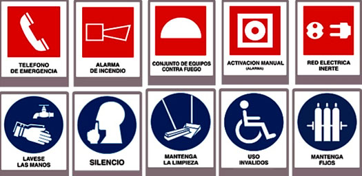
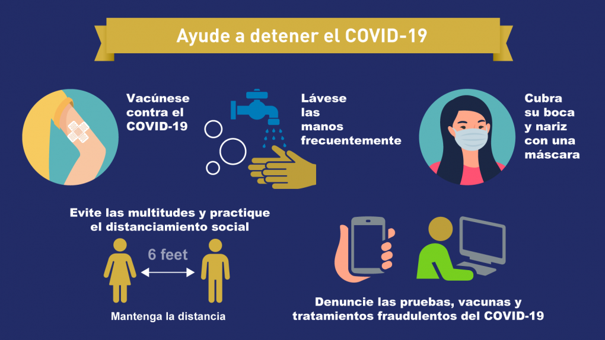
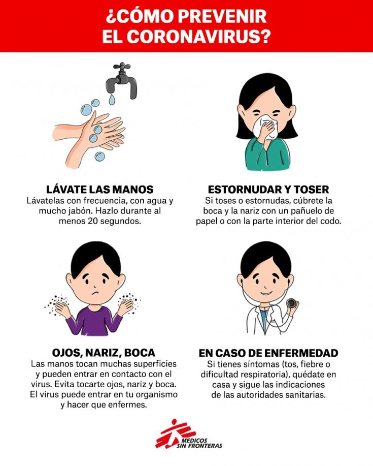
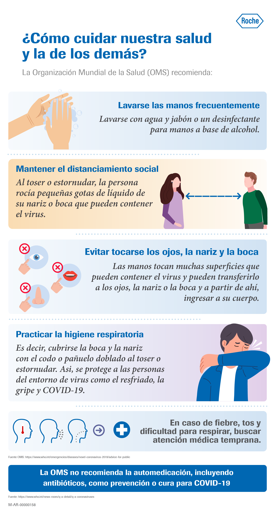

Inicio
SEGURIDAD
SEGURIDAD HOSPITALARIA:¿QUÉ ES Y CUÁL ES SU IMPORTANCIA?
La seguridad hospitalaria garantiza que la asistencia sanitaria funcione sin riesgos y accidentes innecesarios.
Crear una cultura de seguridad y prevención es fundamental.
El concepto de seguridad hospitalaria se refiere a un escenario que tiene como objetivo garantizar que el personal, los profesionales de la salud, los pacientes, la infraestructura y los equipos estén libres de riesgos o peligros de accidentes durante la práctica clínica en un hospital. La Organización Panamericana de la Salud define un hospital seguro como "un establecimiento de salud cuyos servicios están disponibles y funcionando a su máxima capacidad instalada y dentro de la misma infraestructura inmediatamente después de un desastre natural o provocado por el hombre".
MINIMIZAR LOS RIESGOS PARA LOGRAR LA SEGURIDAD HOSPITALARIA:
Riesgo es la posibilidad de que ocurra un evento durante la práctica clínica, es decir,un evento o situación inesperado que puede o no causar daño al paciente. Su aparición puede deberse a diversos factores-como la presencia de una amenaza o amenaza- y también a la vulnerabilidad del propio sistema, ya sea política, organizativa o financiera. Hablar de seguridad clínica del paciente se hace, por lo tanto, en el contexto de la atención de la salud sin riesgos innecesarios o posibles, porque el objetivo principal de un trabajador de la salud es garantizar la seguridad del paciente.Específicamente, el Manual de Ética del Colegio Estadounidense de Médicos incluye apropiadamente el deber de no dañar a los pacientes. Los avances tecnológicos en el cuidado de la salud en los últimos años han jugado un papel claveen la mejora de la seguridad hospitalaria. Han tenido un impacto positivo en la seguridad clínica del paciente y son el resultado de los avances tecnológicos, la mayor especialización de los profesionales, la proliferación de nuevos tratamientos y pruebas diagnósticas y procedimientos menos invasivos.
   